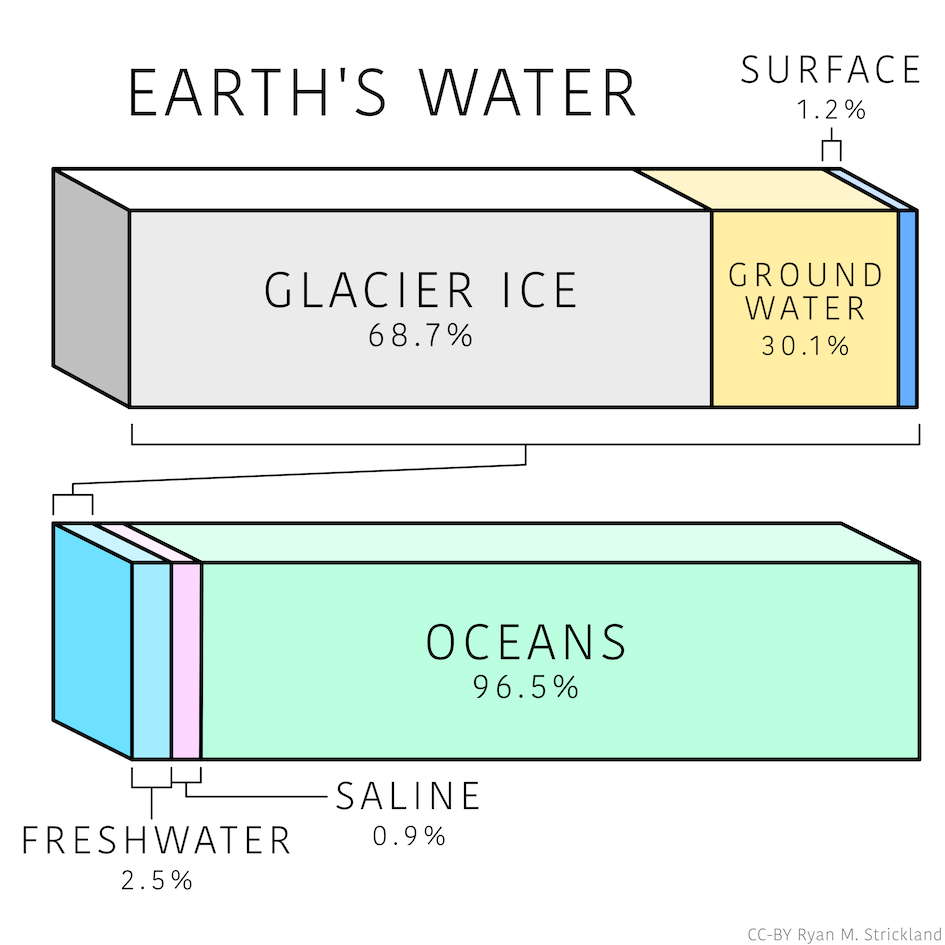
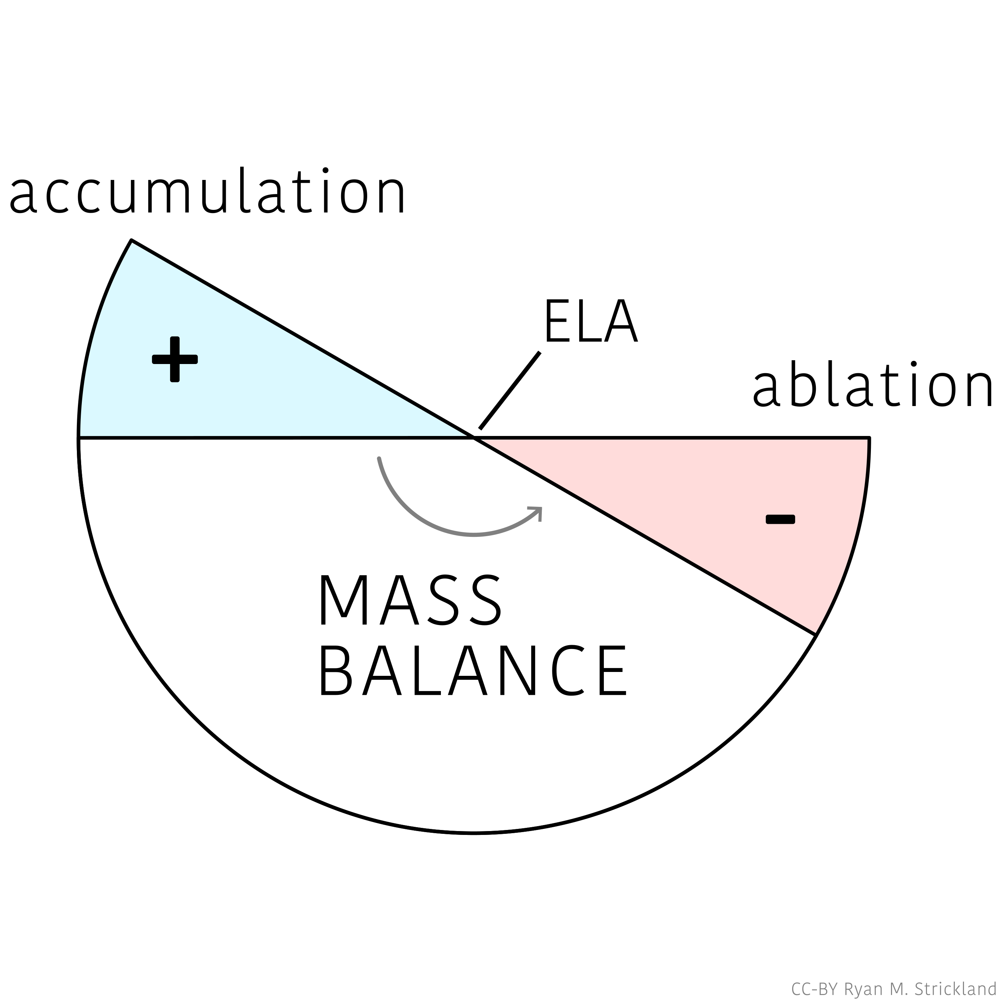
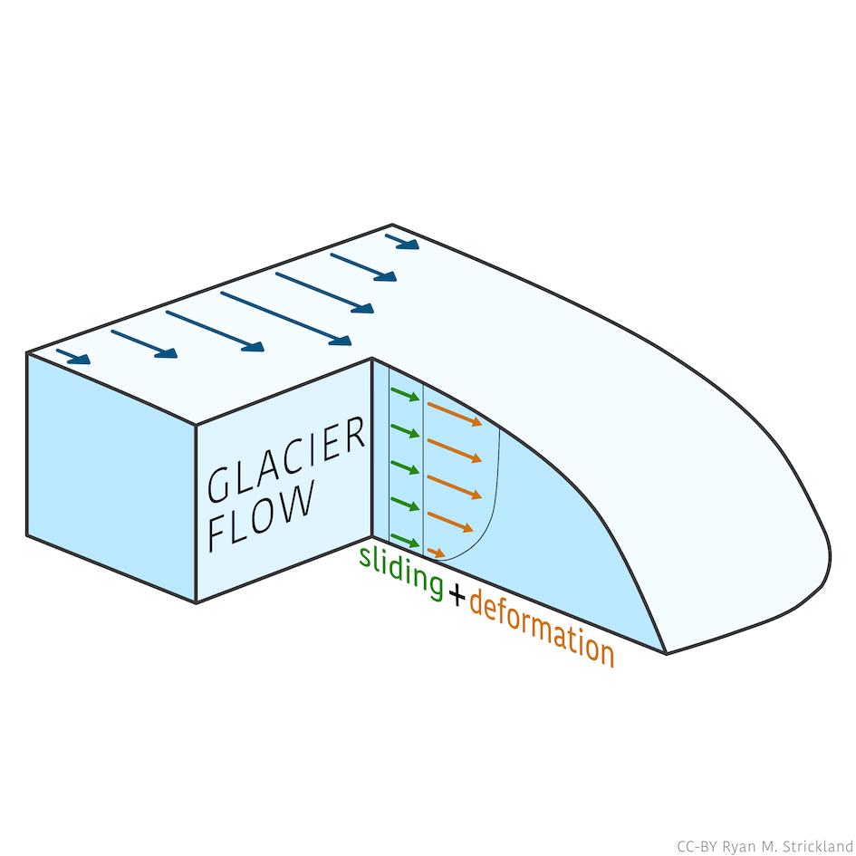

A podcast about glaciers, climate, landscape evolution, and the history of science.
Ways of Ice explores glaciers as dynamic systems that shape landscapes, climate and human understandingacross deep time.
Combining glaciology, geomorphology, climate science, and science history, the series approaches Earth systems through narrative storytelling and conceptual models.
Episodes range from Antarctic ice dynamics and mountain glaciers to the geometry of landscapes, the philosophy of modelling, and the history of glaciological thought.
Topics include the scale of glaciation on Earth, melt and accumulation, ice flow, and glacial erosion. Full transcripts and additional resources will be added over time.

Listen to Episode 01 →
Listen to Episode 02 →
Listen to Episode 03 →Your anonymous feedback helps guide the development of future episodes. It consists of 6 multiple choice responses and 4 optional short answer responses. The survey will remain open until 1 July 2026. Thank you for participating!
Please click the link below to provide feedback for Ways of Ice.
Subscribe using your preferred podcast app.
Replace the placeholder below with your RSS feed URL.
Searchable transcripts and citations for each episode.
Expanded written explorations connected to episode themes.
Figures, glacier imagery, diagrams, and conceptual illustrations.